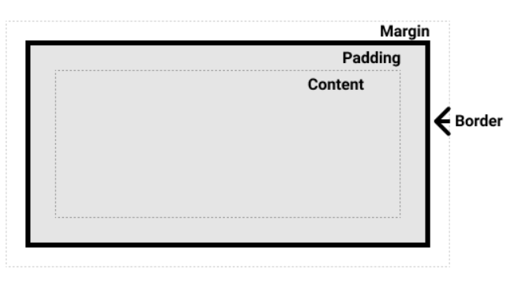

Каждый элемент в CSS заключён в блок, и понимание поведения этих блоков — это ключ к умению задавать раскладку с помощью CSS, то есть выстраивать одни элементы относительно других элементов. В этом уроке мы надлежащим образом рассмотрим блочную модель CSS, чтобы вы могли создавать более сложные раскладки, понимая принцип ее работы и терминологию, которая к ней относится.
Блочные и строчные элементы
В CSS мы, говоря упрощённо, имеем два типа элементов — блочные и строчные. Эти характеристики относятся к поведению блоков в контексте потока страницы и относительно других блоков на странице.
Если элемент определён как блочный, то он будет вести себя следующим образом:
- Начнётся с новой строки.
- Будет расширяться вдоль строки таким образом, чтобы заполнить всё пространство, доступное в её контейнере. В большинстве случаев это означает, что блок станет такой же ширины, как и его контейнер, заполняя 100% доступного пространства.
- Будут применяться свойства width и height.
- Внешние и внутренние отступы, рамка будут отодвигать от него другие элементы.
Если не изменить намеренно тип отображения на строчный, то такие элементы, как заголовки (например, h1) и p, все используют block как свой внешний тип отображения по умолчанию.
Если элемент имеет тип отображения inline (строчный), то:
- Он не будет начинаться с новой строки.
- Свойства width и height не будут применяться.
- Вертикальные внешние и внутренние отступы, рамки будут применяться, но не будут отодвигать другие строчные элементы.
- Горизонтальные внешние и внутренние отступы, рамки будут применяться и будут отодвигать другие строчные элементы.
Элемент a, используемый для ссылок, span, em и strong — всё это примеры по умолчанию строчных элементов.
Тип отображения, применяемый к элементу, определяется значениями свойства display такими как block и inline , и относится к внешнему значению display.
внутренний и внешний типы отображения
Здесь следует объяснить, что такое внутренние и внешние типы отображения. Как уже говорилось выше, каждый блок в CSS имеет внешний тип отображения, который определяет, блочный он или строчный.
Элементы также имеют внутренние тип отображения, который определяет расположение элементов внутри них. По умолчанию элементы внутри блока располагаются в нормальном потоке: они ведут себя так же, как и любые другие блочные или строчные элементы (как описано выше).
Однако мы можем изменить внутренний тип отображения, используя такие значения display как flex . Если мы установим display: flex; для элемента, внешний тип отображения примет значение block , но внутренний тип изменится на flex . Любые прямые дочерние элементы этого блока станут flex-объектами и будут размещены в соответствии с правилами, изложенными в спецификации Flexbox, о которой вы узнаете позже.
Примечание: Чтобы узнать больше о значениях display, и о том, как работают элементы при блочном или строчном расположении, посмотрите руководство MDN Блочное и срочное расположение.
Когда вы перейдёте к более подробному изучению CSS вёрстки, вы встретите flex и другие внутренние значения, которые могут быть у ваших элементов, например grid.
Тем не менее, блочное и строчное расположение — это поведение web-элементов по умолчанию. Как было сказано выше, это иногда называют нормальным потоком (normal flow), потому что при отсутствии какой-либо другой инструкции элементы имеют блочное или строчное расположение.
Примеры разных типов отображения
Давайте продолжим и рассмотрим некоторые примеры. Ниже мы имеем три разных элемента HTML с внешним типом отображения block. Первый — это абзац, который имеет обрамление, указанное в CSS. Браузер отображает его как блочный элемент, поэтому абзац начинается с новой строки и расширяется на всю доступную ему ширину.
Второй — это список, который свёрстан с использованием display: flex. Это устанавливает flex-расположение для элементов внутри контейнера, однако сам список — блочный элемент и — как и абзац — расширяется на всю ширину контейнера и начинается с новой строки.
Ниже у нас есть абзац блочного типа, внутри которого есть два элемента span. Эти элементы по умолчанию имеют тип inline , однако у одного из них задан класс block, для которого мы установили display: block.
- Item One
- Item Two
- Item Three
I am another paragraph. Some of the words have been wrapped in a span element.
I am a paragraph. A short one.
- Item One
- Item Two
- Item Three
I am another paragraph. Some of the words have been wrapped in a span element.
Мы можем видеть, как строчные элементы (inline) ведут себя в следующем примере. Элементы span в первом абзаце строчные по умолчанию и поэтому не приводят к переносу строки.
У нас также есть элемент ul, для которого установлено display: inline-flex, что создаёт строчный элемент вокруг нескольких flex-объектов.
Наконец, у нас есть два абзаца, для которых установлено display: inline. И строчный flex-контейнер, и абзацы располагаются вместе на одной строке, а не начинаются каждый с новой строки, как они отображались бы, будучи блочными элементами.
В примере вы можете заменить display: inline на display: block или display: inline-flex на display: flex для переключения между этими двумя режимами отображения.
блочная модель CSS
Полностью блочная модель в CSS применяется к блочным элементам, строчные элементы используют не все свойства, определённые блочной моделью. Модель определяет, как разные части элемента — поля, рамки, отступы и содержимое — работают вместе, чтобы создать объект, который вы можете увидеть на странице. Дополнительная сложность заключается в том, что существуют стандартная и альтернативная блочные модели.
Составляющие элемента
Составляя блочный элемент в CSS мы имеем:
- Содержимое: область, где отображается ваш контент, размер которой можно изменить с помощью таких свойств, как width и height.
- Внутренний отступ: отступы располагаются вокруг содержимого в виде пустого пространства; их размер контролируется с помощью padding и связанных свойств.
- Рамка: рамка оборачивает содержимое и внутренние отступы. Её размер и стиль можно контролировать с помощью border и связанных свойств.
- Внешний отступ: внешний слой, заключающий в себе содержимое, внутренний отступ и рамки, представляет собой пространство между текущим и другими элементами. Его размер контролируется с помощью margin и связанных свойств.
Рисунок ниже показывает эти слои: 
Стандартная блочная модель CSS
В стандартной блочной модели, если указать элементу атрибуты width и height, это определит ширину и высоту содержимого. Любые отступы и рамки затем добавляются к этой ширине и высоте для получения общего размера элемента. Это показано на изображении ниже. Предположим, что в элементе есть следующий CSS определяющий width, height, margin, border, и padding